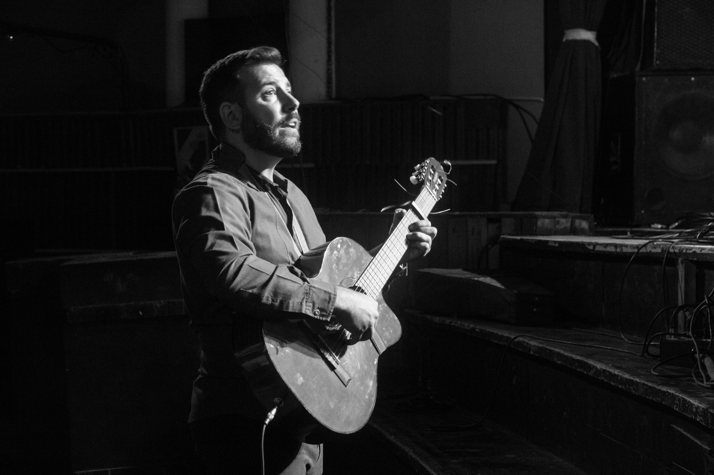

Fernando Zubillaga
(dirección general)

Fernando Zubillaga nació en Bahía Blanca el 17 de junio de 1981. Comenzó sus estudios de música a los 8 años con el Prof. Anibal Vitali y luego en el Conservatorio Provincial de Música de su ciudad. Retomó el Conservatorio en el año 2005 luego de varios años sin hacer música para recibirse en 2013 de Profesor de Música con orientación en Dirección Coral, Director de coro y Maestro preparador vocal.
Además, se ha capacitado con directores como Nestor Zadoff, Nestor Andrenacci, Ronen Nissan, Eduardo García Novelli, Gwyng Williams, Alberto Balzanelli, Virginia Bono, entre otros, continuando periódicamente con su formación.
Desde el año 1997 ha cantado formando parte de diversas agrupaciones corales, además de grupos de animación litúrgica, donde comenzó a desempeñarse en este ministerio
Desde el año 2001 se ha desempeñado como director de coros de diversas agrupaciones, estando actualmente a cargo del Vocal 8 y media (Coro amateur de jóvenes y adultos creado en 2010), y el Coro EnCantado (Taller de coro de la academia “EnCantados, mucho gusto, creado en 2023). También se ha desempeñado como director de pequeños ensambles instrumentales.
Posee obras sacras y populares de su autoría, así como diversos arreglos de repertorio popular y religioso. También forma parte del grupo de música celta “Triskel Fusión Celta” en la ciudad de Bahía Blanca. Desde el año 2021 forma parte del Coro Estable de los Organismos Artísticos del Sur, en la cuerda de bajos.